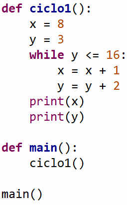
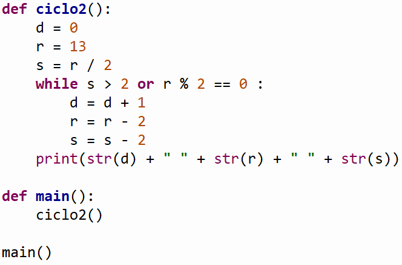

Objetivo
ObjetivoCiclo While
Objetivo
Entender cómo funciona el ciclo While.
 Revisión de autoestudio
Revisión de autoestudio
1. ¿Qué aparece en la pantalla si se ejecuta el siguiente código de Python?

2. ¿Qué aparece en la pantalla si se ejecuta el siguiente código de Python?

 Recursos
Recursos